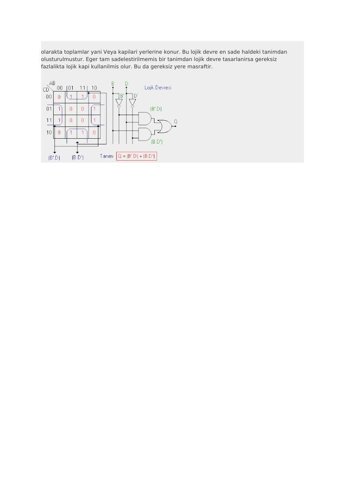

· EEM211
EEM211 Sayısal Mantık Tasarımı: Karno Haritası ve Lojik Aileleri (Arşivlenmiş Web Notları)
EEM211 – Sayısal Mantık Tasarımı · 07.11.2006 · 18.10.2026
EEM211 klasöründe saklanan “Karno Haritası” ve “LOGIC FAMILY” adlı iki internet metni. İlk metinde 19 Ağustos 2006 tarihi bulunuyor; ikinci dosyanın arşiv tarihi 7 Kasım 2006. Kaydedilmiş belgelerde özgün site ve yazar adı açıkça belirtilmediğinden bu bilgiler doğrulanamadı. PDF kopyaları birlikte yazının sonunda indirilebilir.
Bu içerik üçüncü taraf bir kaynağa aittir; arşiv ve nostalji amacıyla kaynak belirtilerek paylaşılmıştır. Hak sahibinin talebi hâlinde kaldırılır.
Karno haritasının kurulması
Metin, n değişkenli bir fonksiyon için 2ⁿ hücre gerektiğini anlatır. Her hücre doğruluk tablosundaki bir giriş birleşimine karşılık gelir. İki, üç ve dört değişken için sırasıyla 4, 8 ve 16 hücre bulunur; beş ve altı değişkenli haritalar da gösterilir.
Satır ve sütunlar komşu hücrelerde yalnız bir değişken değişecek biçimde sıralanır. Doğruluk tablosunda çıkışın 1 olduğu birleşimler ilgili hücreye yazılır. Toplam-çarpım ifadesi için bu 1'ler gruplandırılır.
Gruplama kuralları
- Gruplar 1, 2, 4, 8 gibi ikinin kuvveti sayıda hücre içerir.
- Yatay ve düşey komşuluk kullanılır; köşegen komşuluk kullanılmaz.
- Haritanın karşı kenarları da komşudur; kenardan taşan gruplar kurulabilir.
- Bir hücre birden fazla gruba girebilir.
- Büyük gruplar daha az değişken içeren terimler verir.
- Grup içinde değişen değişkenler elenir; sabit kalan değişkenler terime alınır.
Kaynağın örneğinde sadeleşmiş ifade Q=B′D+BD′ olur. İki çarpım terimi VE kapılarıyla, toplamı VEYA kapısıyla oluşturulur; B ve D'nin tümleyenleri için eviriciler kullanılır. İfade B ile D'nin XOR işlevidir.

Logic families
İngilizce ikinci metin, mantık kapılarının gerçeklenmesinde kullanılan aileleri tarihsel bir çerçevede tanımlar. Temel ayrım, dışarıdan aynı Boolean işlevini gerçekleştiren kapıların iç devre yapısının farklı olabilmesidir.
| Kısaltma | Açılım |
|---|---|
| DL | Diode logic |
| RTL | Resistor-transistor logic |
| DTL | Diode-transistor logic |
| ECL | Emitter-coupled logic |
| TTL | Transistor-transistor logic |
| PMOS / NMOS | P-channel / N-channel MOS logic |
| CMOS | Complementary MOS logic |
| BiCMOS | Bipolar ve CMOS yapılarının birleşimi |
| I²L | Integrated injection logic |
Metin, bipolar aileler ile MOS tabanlı aileleri, güç tüketimi ve anahtarlama davranışı üzerinden karşılaştırır. CMOS devrede girişin kararlı olduğu durum ile anahtarlama anı ayrılır; kapasitelerin şarj/deşarjı dinamik güç tüketimini belirler. Çalışma frekansının ve yük kapasitesinin artması tüketimi artırır; besleme gerilimi de belirleyicidir.
TTL ve CMOS adlarının altında farklı alt aileler bulunur. Aynı mantık işlevi ya da benzer parça numarası tek başına elektriksel uyumluluk anlamına gelmez; giriş ve çıkış seviyeleri aileye bağlıdır.
Not: Bu metindeki teknoloji ve yaygınlık değerlendirmeleri 2006 döneminin arşiv içeriğidir.